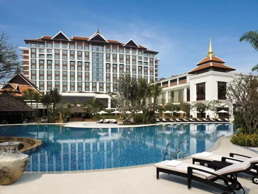
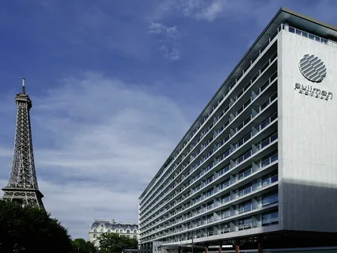
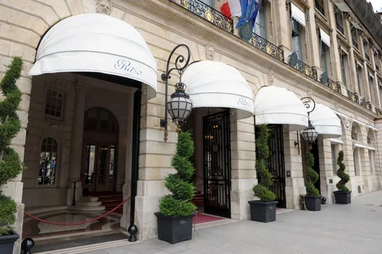

| 
Отель Shangri-La, Paris занимает здание бывшего дворца принца Роланда Бонапарта, внесенное в список исторических памятников Франции. Отель расположен напротив Эйфелевой башни, на противоположной стороне Сены. Здесь отражено азиатское гостеприимство и французский стиль жизни. В отеле работают 2 ресторана, один из которых отмечен звездой Мишлен. К услугам гостей крытый бассейн и спа-салон. Расстояние до площади Трокадеро составляет 500 метров.Из некоторых номеров и люксов отеля Shangri-La Paris открывается великолепный вид на Эйфелеву башню. Как фирменные люксы, так и прочие номера и люксы оформлены в кремовых, белоснежных и синих тонах, сочетая в себе европейские имперские традиции с азиатской эстетикой. Во всех номерах имеются отдельная гостиная с письменным столом и отделанная мрамором ванная комната с отдельной ванной, полом с подогревом, тропическим душем и туалетно-косметическими принадлежностями Guerlain. Номера и люксы обставлены мебелью, изготовленной на заказ, и декорированы хрусталем. Также в распоряжении гостей док-станция для iPod, сейф для ноутбука и телевизор с плоским экраном и киноканалами. |
|  Четырехзвездочный отель Pullman Paris Tour Eiffel расположен рядом с Эйфелевой башней на площади Трокадеро. К услугам гостей круглосуточный фитнес-зал с кардиотренажерами и ресторан Frame с террасой. Отель находится в 5 км от стадиона «Парк де Пренс», поездка до которого занимает всего 10 минут.Светлые номера отеля оформлены в современном стиле. Из окон открывается панорамный вид на Париж. В распоряжении гостей телевизор с плоским экраном и бесплатным доступом к новейшим фильмам, док-станция для iPod и бесплатный Wi-Fi. Большинство номеров выходит на балкон. Из ряда номеров открывается великолепный вид на Эйфелеву башню или сад.В ресторане с открытой кухней подают блюда калифорнийской кухни с французскими нотками. К услугам гостей также стильный винный бар. В общем лаундже установлены компьютеры и принтеры. Каждое утро для гостей сервируют несколько вариантов завтрака, включая азиатский, вегетарианский и безглютеновый.Отель Pullman Paris находится на левом берегу Сены, всего в 5 минутах ходьбы от Эйфелевой башни. От станции метро Bir-Hakeim (линия 6) в 600 метрах от отеля можно без пересадок доехать до Триумфальной арки, Елисейских полей и Лувра. |
| 
Здесь созданы все условия для комфортного проживания — есть кондиционер, холодильник, телевизор, фен, утюг, сейф, отопление, терраса, мини-бар.В гостинице есть ресторан, бар, тренажёрный зал, сауна, конференц-зал. Можно прогуляться по территории и в саду. И вы наверняка захотите отдохнуть у бассейна — он тут тоже есть. Причём крытый. Есть возможность взять напрокат машину.У каждого гостя будет доступ в интернет, вы сможете выложить фотографии, отправить файл или позвонить родным по видео. Учитывайте время заселения в гостиницу. Заезд здесь начинается с 15:00, выехать нужно до 12:00. Даже если вы прибудете поздно ночью, вас встретят на круглосуточной стойке регистрации и помогут с размещением. Лифт внутри есть. В гостинице есть и удобства для людей с ограниченными возможностями.Если вы на машине, можете оставить её на парковке.К вашим услугам: химчистка, прачечная, обслуживание номеров, консьерж-сервис, камера хранения. |